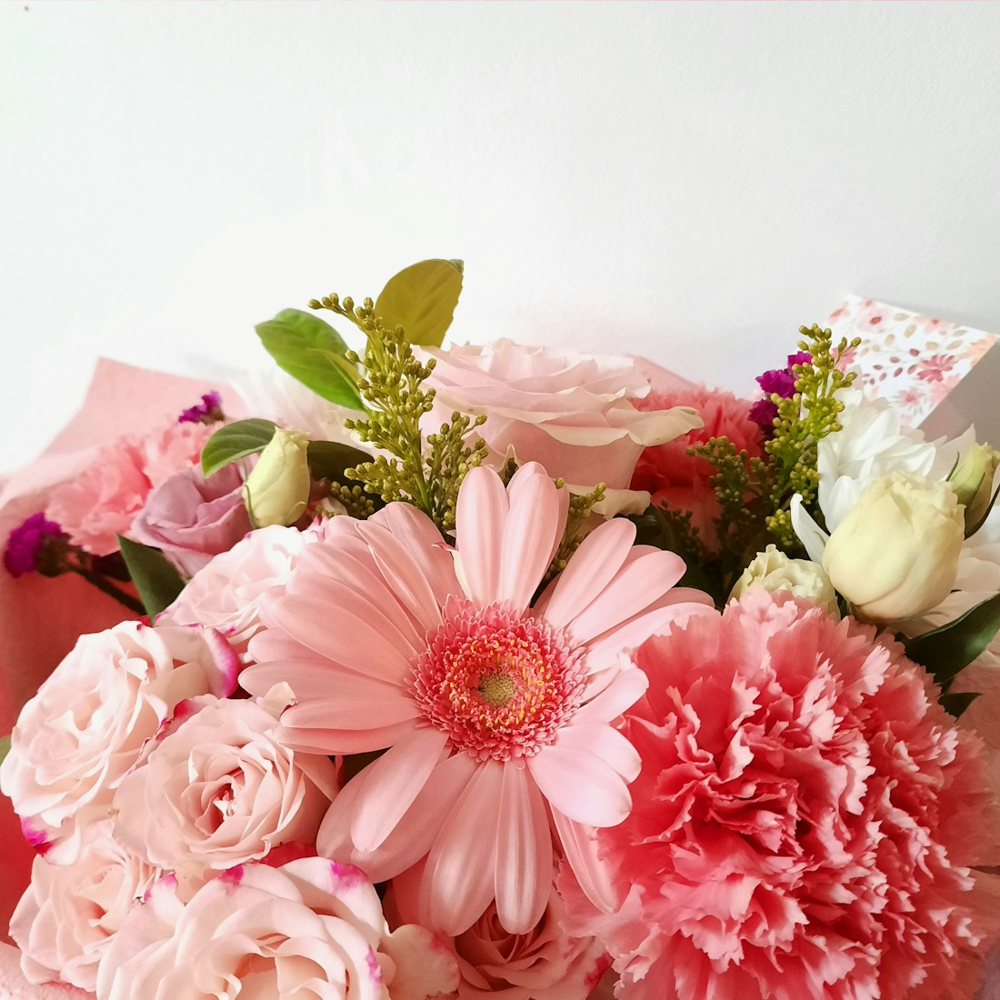
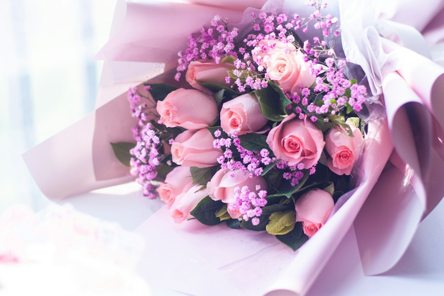
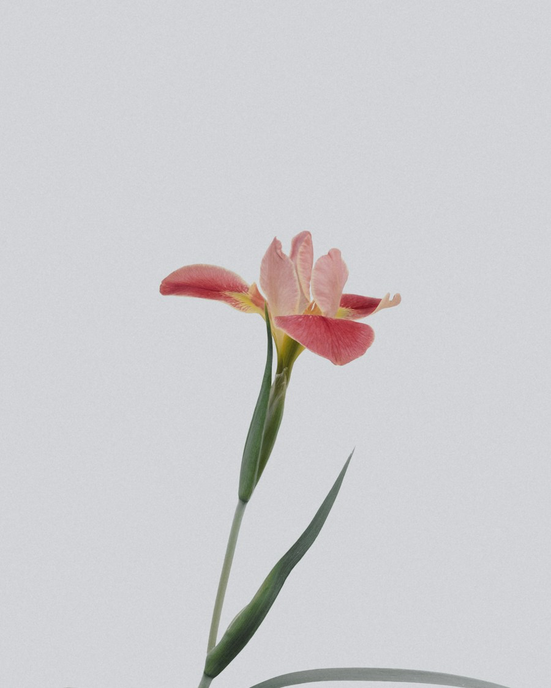

Розовое утро
Розы, гербера и гвоздики.
от 3 900 ₽
Независимая цветочная мастерская / концепт

Для чувств, которым
тесно в словах.
Нежные оттенки, свободные линии и немного воздуха между цветами.
Выбрать композицию Размер, ваза и открытка —Композиции мастерской
От одного выразительного цветка до букета.
Выберите характер, а затем — размер и детали.

Розы, гербера и гвоздики.
Розовые розы с сиреневыми цветами.

Персиковый ирис. От одного стебля.
Цены указаны за выбранный размер. Изображения — визуальные ориентиры; точный состав не фиксирован.
Мастерская в деталях
Не идеальные.
Живые.
Розы, герберы и ирисы в простой упаковке.
Подберите размер букета, добавьте вазу или открытку. Цена меняется при выборе.
Вернуться к композициямНа следующий день
Чистым острым инструментом срежьте кончики стеблей перед тем, как поставить цветы в вазу.
Вымойте вазу, уберите листья ниже уровня воды. Каждый день наливайте свежую прохладную воду.
Держите цветы вдали от батарей, прямого солнца и спелых фруктов.
В окне композиции доступны три размера с отдельными ценами. Для ириса — один, три или пять стеблей. На иллюстрации ириса показан один цветок; остальные варианты демонстрируют расчёт стоимости.
Это визуальная концепция, а не ассортимент действующей мастерской. Изображения передают характер и палитру. В настоящей мастерской сезонные цветы и любые замены необходимо согласовать до заказа.
Здесь можно настроить композицию, сохранить выбор в текущей вкладке или скачать его в файл. Доставка, оплата и отправка заявки не подключены.
В окне выбора композиции можно написать текст открытки и скачать итоговый выбор.
Демо показывает сохранение выбора. Чтобы уточнить наличие, обратитесь в мастерскую.
Иллюстративные отзывы.
«Простая упаковка подчёркивает цветы.»
«Удобно сразу видеть цену.»
Калининград — город для примера. Адрес бизнеса пока не указан.
Карта Калининграда